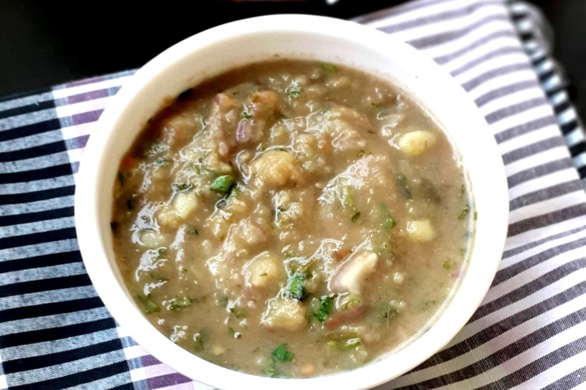

Back to States
Eromba

Ingredients
- 2 medium potatoes
- 100g fermented fish (Ngari)
- 8-10 red chillies
- Salt to taste
- Fresh coriander leaves
- Mustard oil (for aroma)
- Optional seasonal vegetables (like yongchak, beans)
Instructions
1. Boil potatoes, chillies, and optional vegetables until soft.
2. Add fermented fish and mash everything thoroughly.
3. Add salt to taste and mix in some mustard oil for aroma.
4. Garnish with fresh coriander and serve warm.
Eromba is typically eaten with rice as part of a traditional Manipuri meal.